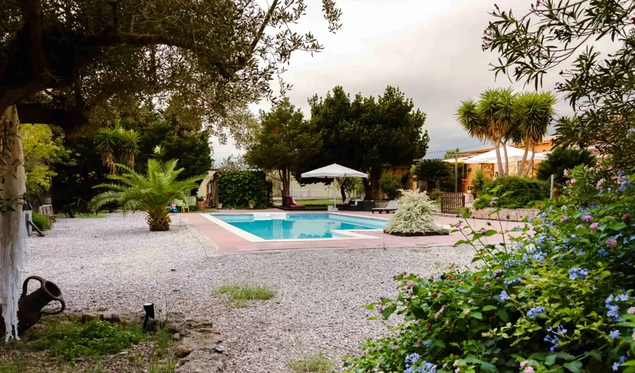
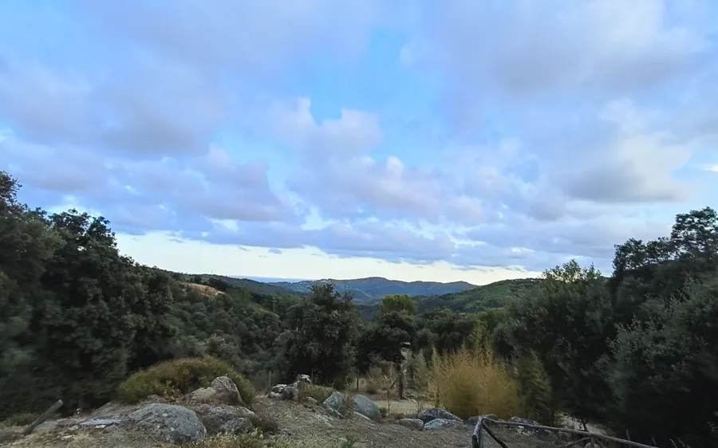

Home / Retreats and events
Retreats and eventsJourneys to
look within
We hold retreats and events in Catalonia, the Canary Islands and India.

Pre-registration open
21 February to 6 March 2027
India: Rishikesh, Ganges, Himalayas
A journey of self-knowledge through the heart of India. For 14 days Rishikesh will be the retreat's base, combining inner work with the Ganges, the ashrams, the temples, nature and the Himalayas.
14 days13 nights
RishikeshIndia
Opento everyone
2.812 €per person
Where
Catalonia, the Canary Islands and India
We hold retreats and events in these three places. Write to us and we'll tell you the next dates.


India
India · Rishikesh
Next retreat: 21 February to 6 March 2027.

Therapeutic guidance
Plant medicine processes
Personalised therapeutic processes within a group setting, with careful individual preparation and support that continues after each session.
Melania and Miquel also share their own retreats and events on their personal websites: melaniadivara.com and miquelcanut.com.